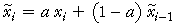
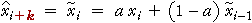
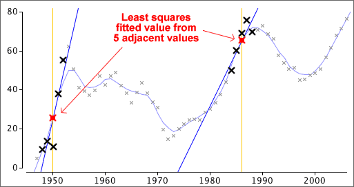
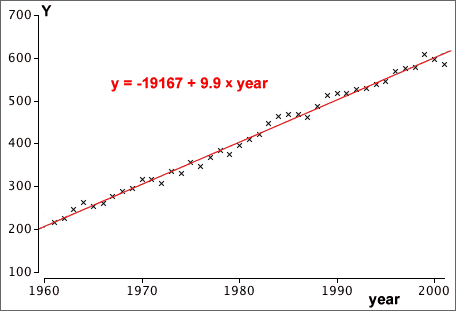

If you don't want to print now,
Time series data
Data sets whose measurements are made sequentially at regular intervals are called time series. We often want to forecast future values of a time series.
The importance of plotting
As with other data structures, the information in a time series is most easily understood from a graphical display. A time series plot is a type of scatterplot whose horizontal axis shows the time-ordering of the values. Successive crosses are often joined by lines.
Types of pattern
| Trend | Seasonal variation |
|---|---|
Trend refers to long-term increases and decreases in the values.

Moving averages are also called running means. In the example below, a 7-point moving average replaces each value with the mean of it and the 3 adjacent values on each side.
If averaging over an even number of values, the smoothed value is for a time between those of the data values, such as "year 2005.5". A second stage of averaging for even run lengths To provide smoothed values at the same times as the raw data, we often take a further 2-point moving average.
This is equivalent to giving half weight to the two outermost values. If based on moving averages of 4, this is called a 4-point centred moving average. These centred averages are particularly useful when analysing seasonal data. For example, 12-point centred moving averages are often used for monthly data. 4.2.3 Robust smoothingOutliers and running medians Since medians are less sensitive to outliers than means, a more robust alternative to running means replaces each value by the median of it and adjacent values. A 3-point running median is:
and higher-order running medians will use more adjacent values. Comparison of means and medians
 where the smoothing constant, a, is a value between 0 and 1. The smoothed value is a 'weighted average' of the actual value at that time and the previous smoothed value. Alternative formula The formula can also be expressed as
For example, if a = 1/2 ,
The smoothed value puts more weight on the recent past (which is an intuitively sensible thing to do).
Forecasting future values If the most recent value is at time i, we forecast the value at time i + k to be the last exponentially smoothed value, 
Time series with trend If the time series has an increasing trend, exponential smoothing will tend to underestimate the trend. Similarly, the smoothed series will be too high if there is a decreasing trend.
  Recoding the years The large intercept in the example above is avoided if the years are recoded so that some year within the range of the data becomes "year 0". trend = b0 + b1 (time − 1960) This model is equivalent and gives the same fitted values and forecasts.
4.3.2 Quadratic trendQuadratic models If the trend in a time series is nonlinear, a linear model should not be used. A simple model that can explain some simple types of curvature is a quadratic model: trend = b0 + b1 time + b2 time2 This has three parameters that can be adjusted to improve the fit of the model. Residuals are again defined as ei = yi − trendi and the least squares estimates of b0, b1 and b2 are the values that minimise the residual sum of squares, Σ ei2
4.3.3 ForecastingUsing linear and quadratic models for forecasting After fitting a linear or quadratic model by least squares, forecasting is simply a matter of inserting future time values into its equation. Dangers in forecasting It is important to realise that the forecasts from linear or quadratic models are highly dependent on the type of line or curve that is chosen for modelling. The dangers are the same as those for extrapolation in bivariate relationships. Beware forecasting many time periods into the future — the shape of the actual trend line might be different from your model. 4.3.4 Polynomial trendCubic and higher-degree polynomial models If a quadratic model does not adequately describe the shape of the trend in a time series, it is tempting to try to further increase the order of the polynomial, trend = b0 + b1 time + b2 time2 + b3 time3 + ... This kind of polynomial model can also be fitted by least squares.
A polynomial of degree 3 or 4 often provides a fairly smooth description of trend but polynomial models usually behave badly (with sudden increases or decreases) beyond the data points, so... Polynomial models of degree greater than 2 should not be used for forecasting. 4.3.5 Detrending a time seriesResiduals The residuals for a time series model subtract the trend from the values and are called the detrended values, ei = yi − trendi If the model under consideration fits well, there should be no pattern in the residuals — each should have the same chance of being positive or negative. |